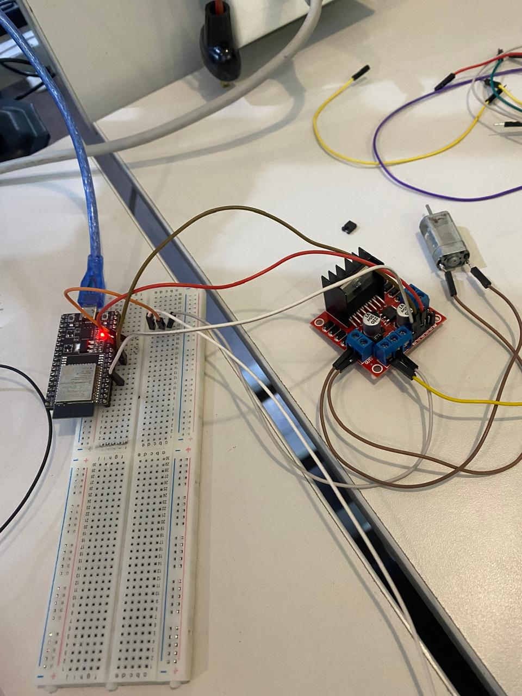

Practicas
Práctica 1
Esta practiica podemos observar el uso de un circuito integrado 555 de manera astable en la cual, hace parpadear un diodo led dependiendo del valor de las resistencias.
Práctica 2
Esta practica consistio en usar un ESP32 para controlar de distantas maneras un led sea desde solo el ESP32, como con este y un botón y por medio de bluetooth.
ESP32 solo:
const int led=33
void setup () {
Serial. begin (115200);
pinMode (Led, OUTPUT) ;
}
void lo0p() {
digitalWrite(led,1);
delay (1000);
digitalwrite(led,0);
delay (1000);
}
ESP32 con botón:
const int led=33;
const int btn=34;
void setup() {
Serial.begin(115200);
pinMode(led,OUTPUT);
pinMode(btn,INPUT);
}
void loop() {
int estado = digitalRead(btn);
if(estado == 1 ){
digitalWrite(led,1);
}
else{
digitalWrite(led,0);
}
}
ESP32 Bluetooth:
#include "BluetoothSerial.h"
BluetoothSerial SerialBT;
const int led=33;
void setup() {
pinMode(led,OUTPUT);
Serial.begin(115200);
SerialBT.begin("AbrahamEsp32"); // Nombre del dispositivo Bluetooth
}
void loop() {
if (SerialBT.available()) {
String mensaje = SerialBT.readString();
Serial.println("Recibido: " + mensaje);
if(mensaje == "on" ){
digitalWrite(led,1);
}
else{
digitalWrite(led,0);
}}
delay(100);
}
Práctica 3
En esta practica observaremos a base de un ESP32 combinado a un puente H, sumado de un motor el cambio de dirección y su acelereación y desaceleración.
Aceleración:
#define in1 25
#define in2 26
int var=20;
<br>
void setup() {
<br>
pinMode(in1, OUTPUT);
pinMode(in2, OUTPUT);
ledcAttachChannel(3, 1000, 8 , 0);
Serial.begin(115200);
}
void loop() {
Serial.println(var);
ledcWrite(18, var);
digitalWrite(in1,1);
digitalWrite(in2,0);
delay(1000);
var=var+20;
if(var>255){
var=var-80;
}
delay(1000);
}
